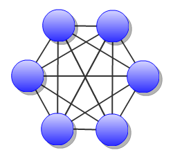
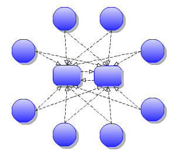

Overview
- Home
- News
- FAQ
- Download
- Documentation
- Examples
- Lightning Demos
- Mailing Lists
- Source Code
- Project Blog
Servers
Integrations
Community
Related Projects
Index
Feeds

|
|
|
| Failover |
|
Overview
OpenEJB supports stateless failover. Specifically, the ability for an EJB client to failover from one server to the next if a request cannot be completed. No application state information is communicated between the servers, so this functionality should be used only with applications that are inherently stateless. A common term for this sort of setup is a server farm.
The basic design assumption is that all servers in the same group have the same applications deployed and are capable of doing the same job. Servers can be brought online and offline while clients are running. As members join/leave this information is sent to the client as part of normal EJB request/response communication so active clients always have the most current information on servers that can process their request should communication with a particular server fail.
Failover
On each request to the server, the client will send the version number associated with the list of servers in the cluster it is aware of. Initially this version will be zero and the list will be empty. Only when the server sees the client has an old list will the server send the updated list. This is an important distinction as the list is not transmitted back and forth on every request, only on change. If the membership of the cluster is stable there is essentially no clustering overhead to the protocol – 8 byte overhead to each request and 1 byte on each response – so you will not see an exponential slowdown in response times the more members are added to the cluster. This new list takes affect for all proxies that share the same connection.
When a server shuts down, more connections are refused, existing connections not in mid-request are closed, any remaining connections are closed immediately after completion of the request in progress and clients can failover gracefully to the next server in the list. If a server crashes requests are retried on the next server in the list (or depending on the ConnectionStrategy). This failover pattern is followed until there are no more servers in the list at which point the client attempts a final multicast search (if it was created with a multicast PROVIDER_URL) before abandoning the request and throwing an exception to the caller.
By default, the failover is ordered but random selection is supported. The multicast discovery aspect of the client adds a nice randomness to the selection of the first server.
Discovery
Each discoverable service has a URI which is broadcast as a heartbeat to other servers in the cluster. This URI advertises the service's type, its cluster group, and its location in the format of 'group:type:location'. Say for example "cluster1:ejb:ejbd://thehost:4201". The URI is sent out repeatedly in a pulse and its presence on the network indicates its availability and its absence indicates the service is no longer available.
The sending of this pulse (the heartbeat) can be done via UDP or TCP: multicast and "multipoint" respectively. More on that in the following section. The rate at which the heartbeat is pulsed to the network can be specified via the 'heart_rate' property. The default is 500 milliseconds. This rate is also used when listening for services on the network. If a service goes missing for the duration of 'heart_rate' multiplied by 'max_missed_heartbeats', then the service is considered dead.
The 'group' property, cluster1 in the example, is used to dissect the servers on the network into smaller logical clusters. A given server will broadcast all it's services with the group prefixed in the URI, as well it will ignore any services it sees broadcast if they do not share the same group name.
Multicast (UDP)
Multicast is the preferred way to broadcast the heartbeat on the network. The simple technique of broadcasting a non-changing service URI on the network has specific advantages to multicast. The URI itself is essentially stateless and there is no "i'm alive" URI or an "i'm dead" URI.
In this way the issues with UDP being unordered and unreliable melt away as state is no longer a concern and packet sizes are always small. Complicated libraries that ride atop UDP and attempt to offer reliability (retransmission) and ordering on UDP can be avoided. As well the advantages UDP has over TCP are retained as there are no java layers attempting to force UDP communication to be more TCP-like. The simple design means UDP/Multicast is only used for discovery and from there on out critical information is transmitted over TCP/IP which is obviously going to do a better job at ensuring reliability and ordering.
Server Configuration
When you boot the server there should be a conf/multicast.properties file containing:
server = org.apache.openejb.server.discovery.MulticastDiscoveryAgent bind = 239.255.2.3 port = 6142 disabled = true group = default
Just need to enable that by setting 'disabled=false'. All of the above settings except server can be changed. The port and bind must be valid for general multicast/udp network communication.
The group setting can be changed to further group servers that may use the same multicast channel. As shown below the client also has a group setting which can be used to select an appropriate server from the multicast channel.
Multicast Client
The multicast functionality is not just for servers to find each other in a cluster, it can also be used for EJB clients to discover a server. A special "multicast://" URL can be used in the InitialContext properties to signify that multicast should be used to seed the connection process. Such as:
Properties p = new Properties(); p.put(Context.INITIAL_CONTEXT_FACTORY, "org.apache.openejb.client.RemoteInitialContextFactory"); p.put(Context.PROVIDER_URL, "multicast://239.255.2.3:6142?group=default"); InitialContext remoteContext = new InitialContext(p);
The URL has optional query parameters such as "schemes" and "group" and "timeout" which allow you to zero in on a particular type of service of a particular cluster group as well as set how long you are willing to wait in the discovery process till finally giving up. The first matching service that it sees "flowing" around on the UDP stream is the one it picks and sticks to for that and subsequent requests, ensuring UDP is only used when there are no other servers to talk to.
Note that EJB clients do not need to use multicast to find a server. If the client knows the URL of a server in the cluster, it may use it and connect directly to that server, at which point that server will share the full list of its peers.
Multicast Servers with TCP Clients
Note that clients do not need to use multicast to communicate with servers. Servers can use multicast to discover each other, but clients are still free to connect to servers in the network using the server's TCP address.
Properties p = new Properties(); p.put(Context.INITIAL_CONTEXT_FACTORY, "org.apache.openejb.client.RemoteInitialContextFactory"); p.put(Context.PROVIDER_URL, "ejbd://192.168.1.30:4201"); InitialContext remoteContext = new InitialContext(p);
When the client connects, the server will send the URLs of all the servers in the group and failover will take place normally.
Multipoint (TCP)
| Since OpenEJB 3.1.3 |

As TCP has no real broadcast functionality to speak of, communication of who is in the network is achieved by each server having a physical connection to each other server in the network.
To join the network, the server must be configured to know the address of at least one server in the network and connect to it. When it does both servers will exchange the full list of all the other servers each knows about. Each server will then connect to any new servers they've just learned about and repeat the processes with those new servers. The end result is that everyone has a direct connection to everyone 100% of the time, hence the made-up term "multipoint" to describe this situation of each server having multiple point-to-point connections which create a fully connected graph.
On the client side things are similar. It needs to know the address of at least one server in the network and be able to connect to it. When it does it will get the full (and dynamically maintained) list of every server in the network. The client doesn't connect to each of those servers immediately, but rather consults the list in the event of a failover, using it to decide who to connect to next.
The entire process is essentially the art of using a statically maintained list to bootstrap getting the more valuable dynamically maintained list.
Server Configuration
In the server this list can be specified via the conf/multipoint.properties file like so:
server = org.apache.openejb.server.discovery.MultipointDiscoveryAgent
bind = 127.0.0.1
port = 4212
disabled = false
initialServers = 192.168.1.20:4212, 192.168.1.30:4212, 192.168.1.40:4212
The above configuration shows the server has an port 4212 open for connections by other servers for multipoint communication. The initialServers list should be a comma separated list of other similar servers on the network. Only one of the servers listed is required to be running when this server starts up – it is not required to list all servers in the network.
Client Configuration
Configuration in the client is similar, but note that EJB clients do not participate directly in multipoint communication and do not connect to the multipoint port. The server list is simply a list of the regular "ejbd://" urls that a client normally uses to connect to a server.
Properties p = new Properties(); p.put(Context.INITIAL_CONTEXT_FACTORY, "org.apache.openejb.client.RemoteInitialContextFactory"); p.put(Context.PROVIDER_URL, "failover:ejbd://192.168.1.20:4201,ejbd://192.168.1.30:4201"); InitialContext remoteContext = new InitialContext(p);
Considerations
Network size
The general disadvantage of this topology is the number of connections required. The number of connections for the network of servers is equal to "(n * n - n) / 2 ", where n is the number of servers. For example, with 5 servers you need 10 connections, with 10 servers you need 45 connections, and with 50 servers you need 1225 connections. This is of course the number of connections across the entire network, each individual server only needs "n - 1" connections.
The handling of these sockets is all asynchronous Java NIO code which allows the server to handle many connections (all of them) with one thread. From a pure threading perspective, the option is extremely efficient with just one thread to listen and broadcast to many peers.
Double connect
It is possible in this process that two servers learn of each other at the same time and each attempts to connect to the other simultaneously, resulting in two connections between the same two servers. When this happens both servers will detect the extra connection and one of the connections will be dropped and one will be kept. In practice this race condition rarely happens and can be avoided almost entirely by fanning out server startup by as little as 100 milliseconds.
Multipoint Configuration Recommendations
As mentioned above the initialServers is only used for bootstrapping the multipoint network. Once running, all servers will dynamically establish direct connections with each other and there is no single point of failure.
However to ensure that the bootstrapping process can occur successfully, the initialServers property of the conf/multipoint.properties file must be set carefully and with a specific server start order in mind. Each server consults its initialServers list exactly once in the bootstrapping phase at startup, after that time connections are made dynamically.
This means that at least one of the servers listed in initialServers must already be running when the server starts or the server might never become introduced and connected to all the other servers in the network.
Failed scenario (background)
As an example of a failed scenario, imagine there are three servers; server1, server2, server3. They are setup only to point to the server in front of them making a chain:
- server1; initialServers = server2
- server2; initialServers = server3
- server3; initialServers = <blank>
Which is essentially server1 -> server2 -> server3. This scenario could work, but they servers would have to be started in exactly the opposite order:
- server3 starts
- server2 starts
- static: connect to server3
- server1 starts
- static: connect to server2
- dynamic: connect to server3
At this point all servers would be fully connected. But the above setup is flawed and could easily fail. The first flaw is server3 lists nothing in its initialServers list, so if it were restarted it would leave the multipoint network and not know how to get back in.
The second flaw is if you started them in any other order, you would also not get a fully connected multipoint network. Say the servers were started in "front" order:
- server1 starts
- static: connect to server2 - failed, server2 not started.
- server2 starts
- static: connect to server3 - failed, server3 not started.
- server3 starts
- no connection attempts, initialServers list is empty.
After startup completes, all servers will be completely isolated and failover will not work. The described setup is weaker than it needs to be. Listing just one server means the listed server is a potential point of weakness. As a matter of trivia, it is interesting to point out that you could bring a fourth server online temporarily that lists all three servers. Once it makes the introductions and all servers learn of each other, you could shut it down again.
The above setup is easily fixable via better configuration. If server3 listed both server1 and server2 in its initialServers list, rather than listing nothing at all, then all servers would fully discover each other regardless of startup order; assuming all three servers did eventually start.
Bootstrapping Three Servers or Less
In a three sever scenario, we recommend simply having all three servers list all three servers.
- server1/conf/multipoint.properties
- initialServers = server1, server2, server3
- server2/conf/multipoint.properties
- initialServers = server1, server2, server3
- server3/conf/multipoint.properties
- initialServers = server1, server2, server3
There's no harm to a server listing itself. It gives you one clean list to maintain and it will work even if you decide not to start one of the three servers.
Bootstrapping Four Servers or More

In a scenario of four or more, we recommend picking at least to servers and focus on always keeping at least one of them running. Lets refer to them as "root" servers for simplicity sake.
- server1/conf/multipoint.properties
- initialServers = server2
- server2/conf/multipoint.properties
- initialServers = server1
Root server1 would list root server2 so they would always be linked to each other regardless of start order or if one of them went down. Server1 could be shutdown and reconnect on startup to the full multipoint network through server2, and vice versa.
All other servers would simply list the root servers (server1, server2) in their initialServers list.
- server3/conf/multipoint.properties
- initialServers = server1, server2
- server4/conf/multipoint.properties
- initialServers = server1, server2
- serverN/conf/multipoint.properties
- initialServers = server1, server2
As long as at least one root server (server1 or server2) was running, you can bring other servers on and offline at will and always have a fully connected graph.
Of course all servers once running and connected will have a full list of all other servers in the network, so if at any time the "root" servers weren't around to make initial introductions to new servers it would be no trouble. It's possible to reconfigure new servers to point at any other server in the network as all servers will have the full list. So these "root" servers are no real point of failure in function, but only of convenience.
Command line overrides
Always remember that any property in a conf/<server-service>.properties file can be overridden on the command line or via system properties. So it is possible easily set the initialServers list in startup scripts.
A bash example might look something like:
#!/bin/bash OPENEJB_HOME=/opt/openejb-3.1.3 INITIAL_LIST=$(cat /some/shared/directory/our_initial_servers.txt) $OPENEJB_HOME/bin/openejb start -Dmultipoint.initialServers=$INITIAL_LIST
|
Site Powered by Atlassian Confluence . |
[ edit ] |